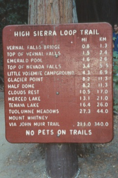
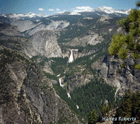

|  |
|
Lots of good info and pictures. Remember they took the mist trail, so many distances are 1.2mi short.
They also have info on Sentinel Dome
and Taft Point.
Preview: The name of the trail says it all. It follows the southeastern portion of the valley rim above Happy Isles, crossing Illilouette Creek at the top of Illilouette Fall to the (usually) sunny flat where Nevada Fall launches itself over the cliff into Yosemite Valley. The Giant Staircase is in sight most of the way, as well as occasional glimpses of Yosemite Falls back to the west. You get five famous waterfalls in one hike. Take a minute to recover from the overwhelming immensity of the panorama from Glacier Point before setting off.To the left (northwest) is North Dome, capping the graceful Royal Arches; in the center is Half Dome, the monumental symbol of Yosemite.Tenaya Canyon stretches away to the northeast, and to the west runs the Merced River Canyon, down whose Giant Staircase flow Vernal and Nevada Falls.
This site also describes trail as “wet and slippery”. However, others seemed to have no problem.
The following sounds bad, but is actually talking about straight down to the valley from Glacier point
We hiked down from Glacier point. It is a very steep climb, and although only 4 miles, it took about 4 hours, as you can't walk very fast. It was quite tiring on the calf muscles. There wasn't much water, so carry some with you. It was beautiful and the viewpoints across are quite stunning. Quite a bit of the hike was in the shade. It was not always interesing climbing, and it did get a bit tedious at times.
Panorama Trail from Glacier Point
This trail is popular for both day and overnight hikers. Day hikers can hike to the top of Illilouette Falls, along the Panorama Cliffs and down the Vernal/Nevada Falls corridor to Yosemite Valley. Many people do this one way hike by shuttling cars or by paying to take a bus to Glacier Point. This trail is also very popular for overnight hikers wishing to travel to Little Yosemite Valley and Half Dome. Overnight hikers must travel to Little Yosemite Valley before camping. Camping in Little Yosemite Valley is limited to the designated backpacker campground. Overnight camping is not allowed at the bridge above Illilouette Fall, at the top of Nevada Fall or along the Panorama Cliffs.
| Destinations | Miles | Km | |
|---|---|---|---|
| Little Yosemite Valley | 5.2 | 8.2 | |
| Half Dome | 8.2 | 14.1 | |
| Merced Lake | 14.3 | 22.9 | |
| Cloud's Rest | 1 | 1.5 | 17.8 |
| Tenaya Lake via Sunrise Trail | 17.4 | 27.2 | |
| Tuolumne via Sunrise | 22.2 | 34.9 | |
| Tuolumne via Vogelsang | 28.3 | 44 | |
Note: The distances to Little Yosemite Valley and especially Half Dome seem short. That would make this hike the same distance as from Happy Isles
The view from Glacier Point, and indeed from nearly every point along the Panorama Trail, is to die for. Yosemite is a stunning place, one of the crown jewels of America's National Parks, and this trail gives you the best views period of any place in the park.
To get to the trailhead at Glacier Point, we took the shuttlebus for $10.50 each. The bus left Curry Village at 8:05 a.m. and arrived at Glacier Point just before 10:00 a.m. after making four stops in the Valley. (The only other bus left at 1:00 p.m., too late to do this hike.) Although this took much more time than I expected, the trip was absolutely delightful due to the excellent commentary delivered by the driver. He spoke nearly non-stop from his own store of knowledge, and clearly was not delivering a scripted talk about which he knew little. The driver had an excellent knowledge of the history, geology, ecology and biology of the area, and gave many personal observations from living in the Yosemite area and hiking there for many years. I learned a few things, including that the bottom edge of the moss layer on the tree trunks indicates the maximum height of the snowpack
This table of distances is cool and informative, but it seems like actual distances walked, including breaks. Perhaps they had a GPS unit??
| Recording number | Mileage | Time arrived | Time left | Altitude | Comments |
|---|---|---|---|---|---|
| 0 | 0.00 | 10:24 | 7100 | Glacier Point. 59° Sign: "Illilouette Falls 2.0, Nevada Falls 5.2, Vernal Falls 7.0, Yosemite Valley 8.0". Sign for Pohona Trail: Sentinel Dome 1.5, Taft Point 3.8, Wawona Tunnel 13.8" | |
| 1 | 0.20 | 10:31 | 7100 | Pohona Trail Jct. Left. | |
| 2 | 1.70 | 11:09 | 6250 | Jct. Trail to Mono Meadows. Sign: Illilouette Falls 0.9, Nevada Falls 3.8, Yosemite Valley 6.9, Merced Lake 12.7". Sign: Mono Meadows 4.3, B.V.L. 11.2, Buck Camp 15.9, Ottoway Lake 14.5, Moraine Meadow 15.3, Fernandez Pass 18.5" | |
| 3 | 2.25 | 11:23 | 5950 | Jct. Side Trail to view of Falls. | |
| 4 | 2.60 | 11:37 | 5800 | Illilouette Bridge. | |
| 5 | 3.00 | 11:56 | 6000 | Pavement remaining beginning here. Opening between two rocks less than 4'. 63° | |
| 6 | 4.00 | 12:42 | 6600 | Just past peak elevation. 56° | |
| 7 | 4.50 | 12:57 | 6550 | Trail Jct. Sign: "Illilouette Falls 1.9, Glacier Point 4.0". 58°. Sign: "Nevada Falls 1.1, Yosemite Valley 4.2, Merced lake 10.0". Consumed 0.65 liters before lunch, 1.0 liters after lunch. | |
| 8 | 4.75 | 1:30 | 6500 | =7 after lunch | |
| 9 | 5.50 | 1:54 | 6000 | Jct. Trail to Nevada Falls. Right. | |
| 10 | 5.80 | 2:03 | 2:11 | 5850 | Overlook on other side of falls beyond bridge. The phone is gone south of bridge. |
| 11 | 6.10 | 2:24 | 5950 | =9. Right on John Muir Trail. Sign: "Vernal Falls 1.6, Yosemite Valley 3.3" | |
| 12 | 7.15 | 2:54 | 5450 | Jct. Clarke Trail. Right. Sign: "Vernal Falls 0.6, Yosemite Valley 1.9" | |
| 13 | 7.75 | 3:24 | 5050 | Restroom just before Vernal Falls. | |
| 14 | 7.90 | 3:34 | 5000 | Left Vernal Falls via Mist Trail. | |
| 15 | 8.50 | 4:00 | 4500 | Jct. Muir Trail. Right. | |
| 16 | 9.50 | 4:27 | 4000 | Happy Isles Road and Bridge. | |
| 17 | 10.20 | 4:40 | 3950 | Curry Village. Consumed 1.0 liter. |